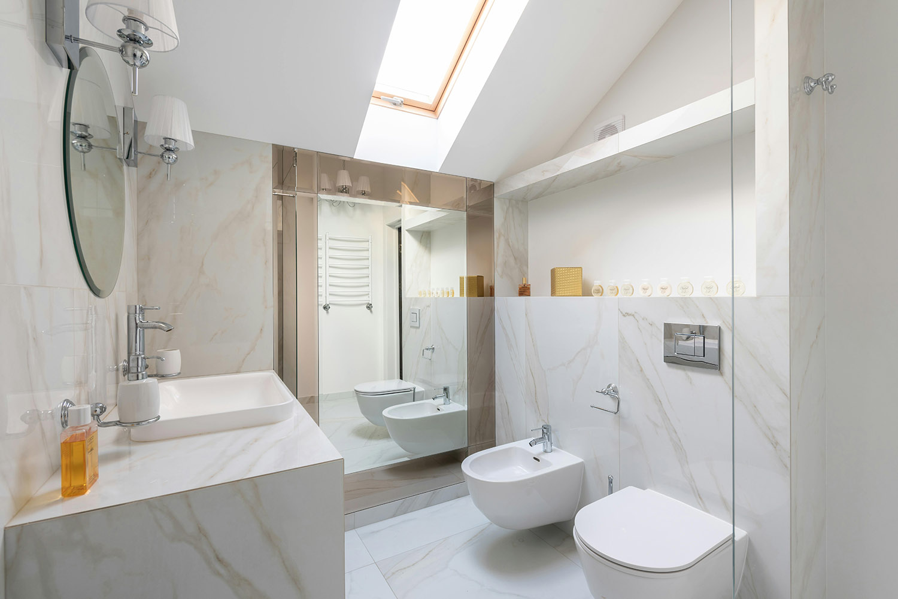
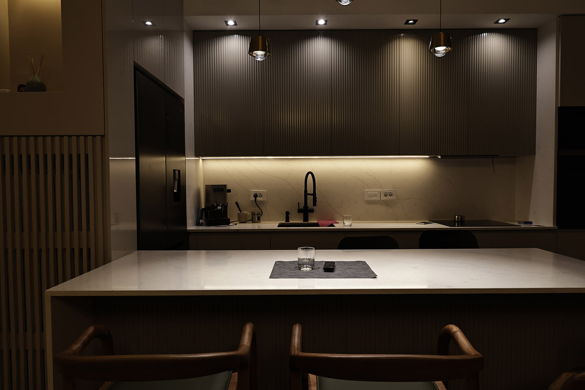
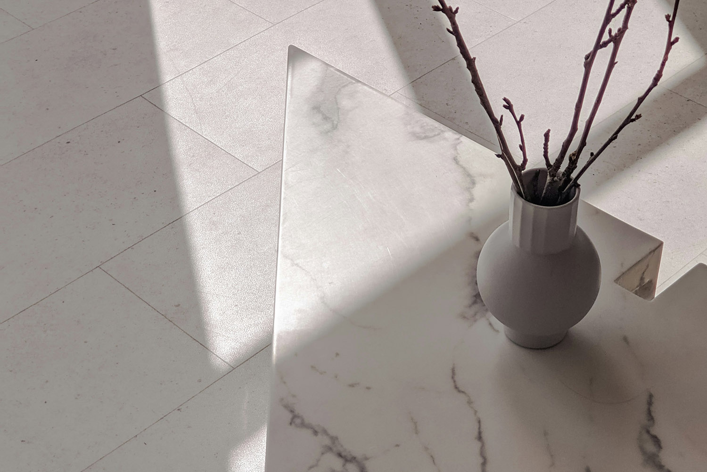

Primene
Prostor u četiri čina
Trenutak samo za sebe
Kvarc unosi mir i eleganciju u prostor svakodnevnih rituala

Srce doma ima svoju scenu
Površina na kojoj se susreću ukusi, razgovori i trenuci za pamćenje

Prostor dobija karakter
Kvarc daje enterijeru ritam, dubinu i prepoznatljiv izraz

Završni akord prostora
Ponekad je jedan pažljivo oblikovan detalj dovoljan da zaokruži celu priču.
